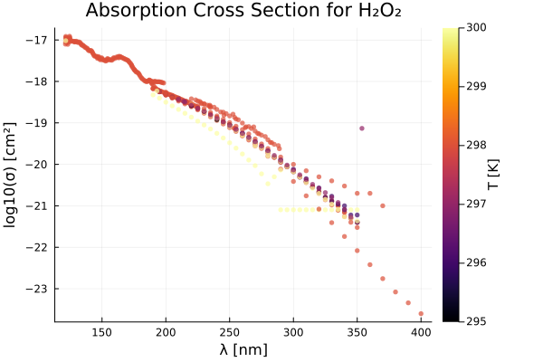
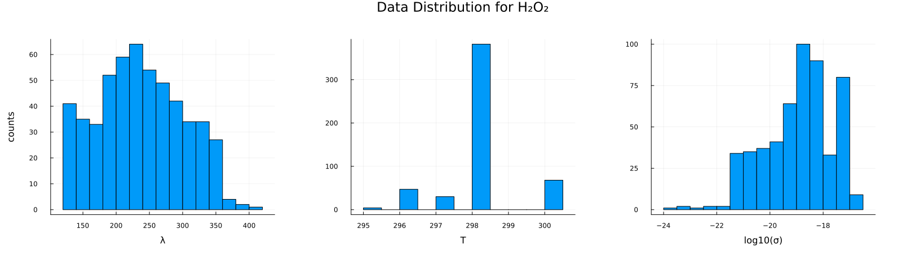
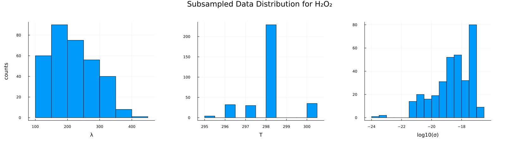
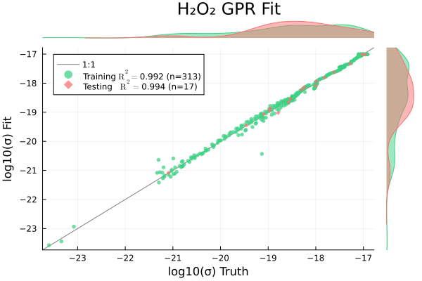
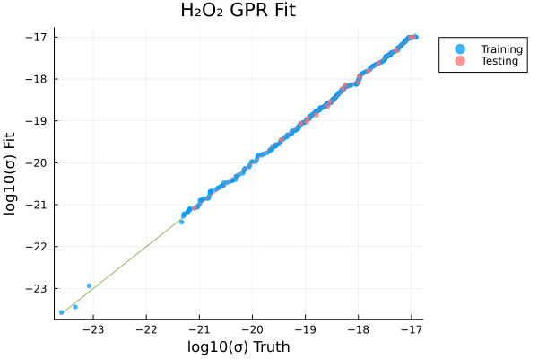
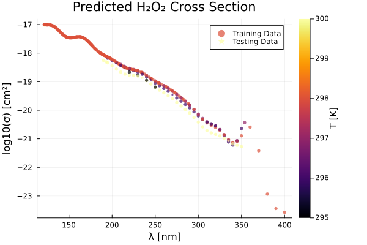
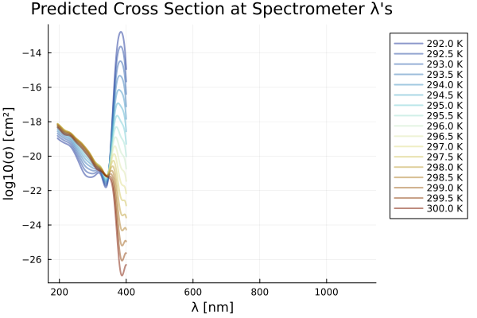
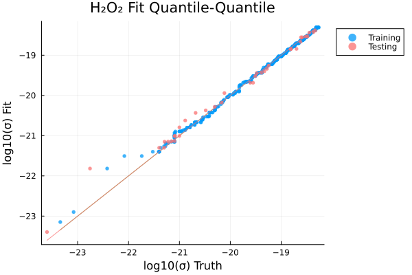

using Plots, MLPlotRecipes
using HDF5
using Tables, DataFrames, CSV
using MLJ, MLJGaussianProcesses
using StatsBase
using KernelFunctions
using ParameterHandling\(\mathrm{H_2O_2}\)
include("./utils.jl")predict_logσ_wΔh5_path = "../../data/photolysis_data.h5"
species = "H2O2"
nice_name = "H₂O₂"
λs, σs, T1s, T2s, source_idx, T_units, category, formula, λ_units, σ_units = get_raw_data(h5_path, species)
println("max λ: ", maximum(λs))
println("min λ: ", minimum(λs))max λ: 1420.059
min λ: 121.33# load in spectrometer wavelengths
hr4000_df = CSV.File("../hr4000_wavelengths.txt") |> DataFrame ; # Δλ = 50 # nm for padding
# df = data_to_df(λs, σs, T1s, T2s, source_idx; λ_lb=minimum(hr4000_df.λ)-Δλ, λ_ub=maximum(hr4000_df.λ)+Δλ)
df = data_to_df(λs, σs, T1s, T2s, source_idx; λ_lb=0.0, λ_ub=1200.0)
println(nrow(df))
describe(df)5314×7 DataFrame
| Row | variable | mean | min | median | max | nmissing | eltype |
|---|---|---|---|---|---|---|---|
| Symbol | Float64 | Real | Float64 | Real | Int64 | DataType | |
| 1 | λ | 235.288 | 121.33 | 230.0 | 400.0 | 0 | Float64 |
| 2 | σ | 1.29046e-18 | 2.5e-24 | 1.9e-19 | 1.23e-17 | 0 | Float64 |
| 3 | T | 298.0 | 295.0 | 298.0 | 300.0 | 0 | Float64 |
| 4 | source_id | 14.919 | 1 | 13.0 | 30 | 0 | Int64 |
nskip = 1
p2 = scatter(
df.λ[1:nskip:end],
log10.(df.σ[1:nskip:end]),
zcolor=df.T[1:nskip:end],
ms=3,
msw=0,
xlabel="λ [$(λ_units)]",
ylabel="log10(σ) [cm²]",
alpha=0.7,
rightmargin=10Plots.mm,
colorbar_title="T [$(T_units)]",
title="Absorption Cross Section for $(nice_name)",
label="",
)
savefig("O3_p2.png")
display(p2)
p1 = histogram(df.λ, xlabel="λ", ylabel="counts", label="",)
p2 = histogram(df.T, xlabel="T", label="",)
p3 = histogram(log10.(df.σ), xlabel="log10(σ)", label="",)
#p3 = histogram(df.σ, xlabel="σ", ylabel="counts")
phist = plot(p1, p2, p3, layout=(1,3), size=(1600, 450), margin=10Plots.mm, plot_title="Data Distribution for $(nice_name)")
# load in spectrometer wavelengths
hr4000_df = CSV.File("../hr4000_wavelengths.txt") |> DataFrame ; # deal with identical wavelength records
gdfs = groupby(df, :T)
res_dfs = []
for gdf ∈ gdfs
gdf_by_λ = groupby(gdf, :λ)
push!(res_dfs, combine(gdf_by_λ, [:σ, :T] .=> mean, renamecols = false))
end
df_unique = vcat(res_dfs...)330×3 DataFrame
305 rows omitted
| Row | λ | σ | T |
|---|---|---|---|
| Float64 | Float64 | Float64 | |
| 1 | 220.0 | 2.6e-19 | 295.0 |
| 2 | 230.0 | 1.9e-19 | 295.0 |
| 3 | 240.0 | 1.2e-19 | 295.0 |
| 4 | 250.0 | 9.0e-20 | 295.0 |
| 5 | 195.0 | 5.65e-19 | 296.0 |
| 6 | 200.0 | 4.83e-19 | 296.0 |
| 7 | 205.0 | 4.21e-19 | 296.0 |
| 8 | 210.0 | 3.73e-19 | 296.0 |
| 9 | 215.0 | 3.11e-19 | 296.0 |
| 10 | 220.0 | 2.695e-19 | 296.0 |
| 11 | 225.0 | 2.21e-19 | 296.0 |
| 12 | 230.0 | 1.915e-19 | 296.0 |
| 13 | 235.0 | 1.56e-19 | 296.0 |
| ⋮ | ⋮ | ⋮ | ⋮ |
| 319 | 305.0 | 2.885e-21 | 300.0 |
| 320 | 310.0 | 2.23e-21 | 300.0 |
| 321 | 315.0 | 1.725e-21 | 300.0 |
| 322 | 320.0 | 1.395e-21 | 300.0 |
| 323 | 325.0 | 1.115e-21 | 300.0 |
| 324 | 330.0 | 9.5e-22 | 300.0 |
| 325 | 335.0 | 8.1e-22 | 300.0 |
| 326 | 340.0 | 6.7e-22 | 300.0 |
| 327 | 345.0 | 6.55e-22 | 300.0 |
| 328 | 350.0 | 6.15e-22 | 300.0 |
| 329 | 193.0 | 5.89e-19 | 300.0 |
| 330 | 121.567 | 9.6e-18 | 300.0 |
# here is where we would do representative subsampling if there are too many records (> 2000)
df_sampled = df_unique
min_data_λ = minimum(df_sampled.λ)
max_data_λ = maximum(df_sampled.λ)400.0p1 = histogram(df_sampled.λ, xlabel="λ", ylabel="counts", label="", margin=10Plots.mm)
p2 = histogram(df_sampled.T, xlabel="T", label="", margin=10Plots.mm)
p3 = histogram(log10.(df_sampled.σ), xlabel="log10(σ)", label="", margin=10Plots.mm)
#p3 = histogram(df.σ, xlabel="σ", ylabel="counts")
phist = plot(p1, p2, p3, layout=(1,3), size=(1600, 450), plot_title="Subsampled Data Distribution for $(nice_name)")
# visualize pre-processed data:
p = scatter(
df_sampled.λ,
log10.(df_sampled.σ),
zcolor=df_sampled.T,
ms=3,
msw=0,
xlabel="λ [$(λ_units)]",
ylabel="log10(σ) [cm²]",
alpha=0.7,
rightmargin=10Plots.mm,
colorbar_title="T [$(T_units)]",
title="Absorption Cross Section for $(nice_name)",
label="",
)
train_frac = 0.95
ntrain = trunc(Int, train_frac * nrow(df_sampled))
idxs = shuffle(1:nrow(df_sampled))
idxs_train = idxs[1:ntrain]
idxs_test = idxs[ntrain+1:end]
Xtrain = df_sampled[idxs_train, [:λ, :T]]
Xtest = df_sampled[idxs_test, [:λ, :T]]
ytrain = log10.(df_sampled.σ[idxs_train])
ytest = log10.(df_sampled.σ[idxs_test])
# gpr = GPR(σ²=0.00001)
gpr = GPR(σ²=30.0)
# gpr = GPR(σ²=10.0)
mach = machine(gpr, Xtrain, ytrain) |> fit![ Info: Training machine(GPR(μ = 0.0, …), …).Iter Function value Gradient norm
0 2.339459e+03 1.119428e+03
* time: 0.01784205436706543
1 2.263134e+03 1.563192e+02
* time: 1.153212070465088
2 5.358080e+02 6.589052e+01
* time: 1.2457399368286133
3 5.557835e+00 9.721013e+01
* time: 1.2981090545654297
4 -3.248790e+01 1.325964e+02
* time: 1.4459540843963623
5 -6.917343e+01 1.952835e+01
* time: 1.4795260429382324
6 -7.838206e+01 6.355420e+01
* time: 1.5386290550231934
7 -8.047555e+01 1.777626e+01
* time: 1.5724310874938965
8 -8.727783e+01 3.495200e+01
* time: 1.6226129531860352
9 -9.185591e+01 8.238827e+00
* time: 1.689121961593628
10 -9.216887e+01 2.850202e+00
* time: 1.73956298828125
11 -9.217843e+01 1.487600e+00
* time: 1.7900009155273438
12 -9.217925e+01 5.128405e-02
* time: 1.8283519744873047
13 -9.217925e+01 1.579888e-03
* time: 1.8859879970550537
14 -9.217925e+01 4.098717e-06
* time: 1.9207110404968262
15 -9.217925e+01 1.962169e-06
* time: 1.9732201099395752
16 -9.217925e+01 1.097834e-06
* time: 2.013740062713623
17 -9.217925e+01 1.181424e-06
* time: 2.083082914352417
18 -9.217925e+01 1.528983e-06
* time: 2.1594059467315674
19 -9.217925e+01 1.691663e-07
* time: 2.2114551067352295
20 -9.217925e+01 8.770028e-07
* time: 2.264190912246704
21 -9.217925e+01 3.905052e-07
* time: 2.3257899284362793
22 -9.217925e+01 1.243601e-06
* time: 2.360887050628662
23 -9.217925e+01 2.983281e-07
* time: 2.4197049140930176
24 -9.217925e+01 1.201886e-06
* time: 2.487051010131836
25 -9.217925e+01 7.034757e-07
* time: 2.5373740196228027
26 -9.217925e+01 2.530421e-07
* time: 2.572097063064575
27 -9.217925e+01 1.385505e-06
* time: 2.788722038269043
28 -9.217925e+01 4.930776e-07
* time: 2.8579659461975098
29 -9.217925e+01 2.396954e-06
* time: 2.936098098754883
30 -9.217925e+01 1.098390e-06
* time: 2.9703729152679443
31 -9.217925e+01 5.701107e-07
* time: 3.0549380779266357
32 -9.217925e+01 4.259928e-07
* time: 3.0887770652770996
33 -9.217925e+01 3.951562e-07
* time: 3.1395320892333984
34 -9.217925e+01 4.704830e-07
* time: 3.174859046936035
35 -9.217925e+01 6.142399e-08
* time: 3.218003988265991
36 -9.217925e+01 8.804564e-07
* time: 3.2854769229888916
37 -9.217925e+01 3.672762e-07
* time: 3.32013201713562
38 -9.217925e+01 6.666229e-07
* time: 3.362222909927368
39 -9.217925e+01 1.159496e-06
* time: 3.413594961166382
40 -9.217925e+01 1.667947e-06
* time: 3.482706069946289
41 -9.217925e+01 3.918653e-07
* time: 3.556584119796753
42 -9.217925e+01 2.619311e-07
* time: 3.6280999183654785
43 -9.217925e+01 1.920892e-06
* time: 3.8101389408111572
44 -9.217925e+01 9.716425e-07
* time: 3.861037015914917
45 -9.217925e+01 5.032594e-07
* time: 3.8964779376983643
46 -9.217925e+01 2.278714e-07
* time: 4.155045986175537
47 -9.217925e+01 2.850134e-07
* time: 4.300062894821167
48 -9.217925e+01 4.447093e-07
* time: 4.4009690284729
49 -9.217925e+01 5.796985e-07
* time: 4.440238952636719
50 -9.217925e+01 1.588275e-07
* time: 4.540491104125977
51 -9.217925e+01 1.176627e-06
* time: 4.580502033233643
52 -9.217925e+01 2.678012e-06
* time: 4.611825942993164
53 -9.217925e+01 1.152002e-06
* time: 4.63004994392395
54 -9.217925e+01 9.225382e-07
* time: 4.65085506439209
55 -9.217925e+01 5.325254e-07
* time: 4.6667540073394775
56 -9.217925e+01 1.205907e-06
* time: 4.70750093460083
57 -9.217925e+01 6.561648e-08
* time: 4.734577894210815
58 -9.217925e+01 6.067634e-07
* time: 4.750313997268677
59 -9.217925e+01 4.636804e-06
* time: 4.80614709854126
60 -9.217925e+01 3.455374e-07
* time: 4.830212116241455
61 -9.217925e+01 1.024665e-06
* time: 4.868428945541382
62 -9.217925e+01 9.889572e-07
* time: 4.912534952163696
63 -9.217925e+01 2.344140e-07
* time: 4.9289329051971436
64 -9.217925e+01 7.907929e-07
* time: 4.949310064315796
65 -9.217925e+01 3.489896e-07
* time: 4.965243101119995
66 -9.217925e+01 3.575847e-07
* time: 5.017074108123779
67 -9.217925e+01 1.814944e-06
* time: 5.049722909927368
68 -9.217925e+01 2.238364e-07
* time: 5.0733959674835205
69 -9.217925e+01 7.336336e-07
* time: 5.09345006942749
70 -9.217925e+01 1.455034e-06
* time: 5.126605033874512
71 -9.217925e+01 5.973155e-07
* time: 5.151640892028809
72 -9.217925e+01 4.635859e-07
* time: 5.182033061981201
73 -9.217925e+01 4.631321e-07
* time: 5.1989641189575195
74 -9.217925e+01 8.216195e-07
* time: 5.215692043304443
75 -9.217925e+01 1.451770e-06
* time: 5.252316951751709
76 -9.217925e+01 1.105580e-06
* time: 5.268925905227661
77 -9.217925e+01 1.510861e-06
* time: 5.294020891189575
78 -9.217925e+01 3.035490e-07
* time: 5.321789026260376
79 -9.217925e+01 2.797459e-06
* time: 5.407860994338989
80 -9.217925e+01 2.440390e-06
* time: 5.4237120151519775
81 -9.217925e+01 3.544074e-07
* time: 5.452014923095703
82 -9.217925e+01 1.212725e-06
* time: 5.467664003372192
83 -9.217925e+01 3.787480e-07
* time: 5.490993022918701
84 -9.217925e+01 1.048861e-06
* time: 5.518901109695435
85 -9.217925e+01 3.440032e-07
* time: 5.534814119338989
86 -9.217925e+01 1.497937e-06
* time: 5.558836936950684
87 -9.217925e+01 8.772859e-07
* time: 5.5757811069488525
88 -9.217925e+01 1.435073e-06
* time: 5.595935106277466
89 -9.217925e+01 6.360051e-07
* time: 5.6200220584869385
90 -9.217925e+01 6.509352e-08
* time: 5.636328935623169
91 -9.217925e+01 9.933371e-08
* time: 5.696660995483398
92 -9.217925e+01 1.690041e-06
* time: 5.7254319190979
93 -9.217925e+01 6.038292e-07
* time: 5.741482973098755
94 -9.217925e+01 3.040670e-07
* time: 5.756904125213623
95 -9.217925e+01 1.340435e-07
* time: 5.780173063278198
96 -9.217925e+01 1.039120e-06
* time: 5.837886095046997
97 -9.217925e+01 1.556764e-06
* time: 5.862093925476074
98 -9.217925e+01 3.546540e-07
* time: 5.909253120422363
99 -9.217925e+01 3.659828e-07
* time: 5.954023122787476
100 -9.217925e+01 2.021565e-07
* time: 5.977991104125977
101 -9.217925e+01 1.088837e-07
* time: 6.048353910446167
102 -9.217925e+01 3.891333e-07
* time: 6.073302984237671
103 -9.217925e+01 3.366700e-07
* time: 6.092955112457275
104 -9.217925e+01 1.013562e-07
* time: 6.13080096244812
105 -9.217925e+01 2.004164e-06
* time: 6.166007041931152
106 -9.217925e+01 4.538427e-07
* time: 6.2041380405426025
107 -9.217925e+01 1.541405e-06
* time: 6.224143028259277
108 -9.217925e+01 1.520036e-07
* time: 6.247966051101685
109 -9.217925e+01 2.465971e-06
* time: 6.264135122299194
110 -9.217925e+01 2.419103e-06
* time: 6.280740976333618
111 -9.217925e+01 9.348253e-08
* time: 6.300600051879883
112 -9.217925e+01 1.202701e-06
* time: 6.332011938095093
113 -9.217925e+01 1.143583e-07
* time: 6.360671043395996
114 -9.217925e+01 2.171093e-06
* time: 6.436408996582031
115 -9.217925e+01 1.691299e-06
* time: 6.459594011306763
116 -9.217925e+01 8.039505e-07
* time: 6.50183892250061
117 -9.217925e+01 1.995467e-06
* time: 6.5171380043029785
118 -9.217925e+01 1.336489e-06
* time: 6.547749042510986
119 -9.217925e+01 8.133766e-07
* time: 6.56722092628479
120 -9.217925e+01 2.332971e-07
* time: 6.591294050216675
121 -9.217925e+01 1.139129e-06
* time: 6.607410907745361
122 -9.217925e+01 1.593737e-07
* time: 6.63599705696106
123 -9.217925e+01 3.991711e-07
* time: 6.651911973953247
124 -9.217925e+01 1.054463e-06
* time: 6.694087028503418
125 -9.217925e+01 6.078298e-07
* time: 6.722038984298706
126 -9.217925e+01 8.002653e-07
* time: 6.746017932891846
127 -9.217925e+01 2.798103e-07
* time: 6.774094104766846
128 -9.217925e+01 2.705874e-06
* time: 6.805495977401733
129 -9.217925e+01 1.409808e-06
* time: 6.841041088104248
130 -9.217925e+01 7.391343e-07
* time: 6.888407945632935
131 -9.217925e+01 2.592122e-06
* time: 6.905098915100098
132 -9.217925e+01 2.463458e-07
* time: 6.925148010253906
133 -9.217925e+01 7.042192e-08
* time: 6.942513942718506
134 -9.217925e+01 1.126211e-06
* time: 6.974905967712402
135 -9.217925e+01 9.251303e-07
* time: 6.99522590637207
136 -9.217925e+01 1.949769e-07
* time: 7.02991795539856
137 -9.217925e+01 4.627979e-07
* time: 7.064861059188843
138 -9.217925e+01 1.077576e-06
* time: 7.092786073684692
139 -9.217925e+01 3.974452e-07
* time: 7.109396934509277
140 -9.217925e+01 8.309730e-07
* time: 7.139300107955933
141 -9.217925e+01 2.342042e-07
* time: 7.15514612197876
142 -9.217925e+01 1.782397e-06
* time: 7.172167062759399
143 -9.217925e+01 1.361807e-06
* time: 7.188257932662964
144 -9.217925e+01 9.466483e-07
* time: 7.2181761264801025
145 -9.217925e+01 7.573757e-07
* time: 7.236161947250366
146 -9.217925e+01 1.414212e-06
* time: 7.277306079864502
147 -9.217925e+01 4.899181e-07
* time: 7.312930107116699
148 -9.217925e+01 1.194632e-07
* time: 7.330128908157349
149 -9.217925e+01 7.930474e-07
* time: 7.346858024597168
150 -9.217925e+01 1.210568e-06
* time: 7.38998007774353
151 -9.217925e+01 7.041350e-07
* time: 7.426487922668457
152 -9.217925e+01 8.592513e-07
* time: 7.451380014419556
153 -9.217925e+01 8.999814e-08
* time: 7.475928068161011
154 -9.217925e+01 6.330770e-08
* time: 7.511331081390381
155 -9.217925e+01 1.174224e-07
* time: 7.565927028656006
156 -9.217925e+01 1.627764e-06
* time: 7.591850996017456
157 -9.217925e+01 5.370531e-07
* time: 7.607129096984863
158 -9.217925e+01 1.203544e-06
* time: 7.622405052185059
159 -9.217925e+01 1.399252e-06
* time: 7.643601894378662
160 -9.217925e+01 8.977238e-07
* time: 7.6909730434417725
161 -9.217925e+01 9.196513e-07
* time: 7.727391004562378
162 -9.217925e+01 1.180869e-06
* time: 7.743864059448242
163 -9.217925e+01 2.628941e-07
* time: 7.760446071624756
164 -9.217925e+01 1.430376e-06
* time: 7.797461986541748
165 -9.217925e+01 3.028295e-07
* time: 7.829000949859619
166 -9.217925e+01 2.366024e-07
* time: 7.857764959335327
167 -9.217925e+01 1.457921e-06
* time: 7.922966003417969
168 -9.217925e+01 3.348512e-07
* time: 7.938930034637451
169 -9.217925e+01 3.637045e-07
* time: 7.9918129444122314
170 -9.217925e+01 2.455333e-06
* time: 8.03199291229248
171 -9.217925e+01 3.105407e-06
* time: 8.04941701889038
172 -9.217925e+01 2.101506e-06
* time: 8.070816040039062
173 -9.217925e+01 4.805836e-07
* time: 8.101224899291992
174 -9.217925e+01 6.627056e-07
* time: 8.118916034698486
175 -9.217925e+01 5.845008e-07
* time: 8.136775016784668
176 -9.217925e+01 1.500587e-06
* time: 8.159168004989624
177 -9.217925e+01 1.644292e-06
* time: 8.193767070770264
178 -9.217925e+01 1.041611e-06
* time: 8.23035192489624
179 -9.217925e+01 1.623707e-07
* time: 8.260426998138428
180 -9.217925e+01 1.757246e-06
* time: 8.279172897338867
181 -9.217925e+01 4.544251e-07
* time: 8.317779064178467
182 -9.217925e+01 7.282955e-07
* time: 8.343554973602295
183 -9.217925e+01 2.236325e-07
* time: 8.361598014831543
184 -9.217925e+01 3.190425e-07
* time: 8.379421949386597
185 -9.217925e+01 8.049288e-07
* time: 8.435180902481079
186 -9.217925e+01 1.527778e-07
* time: 8.455881118774414
187 -9.217925e+01 3.629375e-07
* time: 8.476135015487671
188 -9.217925e+01 4.152619e-07
* time: 8.509836912155151
189 -9.217925e+01 1.882704e-06
* time: 8.546797037124634
190 -9.217925e+01 1.466283e-06
* time: 8.569983005523682
191 -9.217925e+01 2.187763e-06
* time: 8.598663091659546
192 -9.217925e+01 9.328721e-07
* time: 8.634598016738892
193 -9.217925e+01 2.296874e-06
* time: 8.662188053131104
194 -9.217925e+01 1.974180e-06
* time: 8.685614109039307
195 -9.217925e+01 7.478398e-07
* time: 8.71290898323059
196 -9.217925e+01 3.201238e-07
* time: 8.736588954925537
197 -9.217925e+01 6.497068e-07
* time: 8.752150058746338
198 -9.217925e+01 4.396716e-07
* time: 8.787750959396362
199 -9.217925e+01 3.563659e-07
* time: 8.819236040115356
200 -9.217925e+01 6.138066e-07
* time: 8.944736003875732
201 -9.217925e+01 4.382499e-07
* time: 8.97771692276001
202 -9.217925e+01 2.639994e-06
* time: 9.00783109664917
203 -9.217925e+01 4.241993e-07
* time: 9.033556938171387
204 -9.217925e+01 3.370504e-06
* time: 9.065723896026611
205 -9.217925e+01 6.032310e-07
* time: 9.092911005020142
206 -9.217925e+01 8.349802e-07
* time: 9.117630958557129
207 -9.217925e+01 7.729182e-07
* time: 9.184524059295654
208 -9.217925e+01 9.456844e-07
* time: 9.222211122512817
209 -9.217925e+01 1.152134e-06
* time: 9.238832950592041
210 -9.217925e+01 6.806338e-07
* time: 9.262521982192993
211 -9.217925e+01 5.156726e-06
* time: 9.28021502494812
212 -9.217925e+01 1.683358e-06
* time: 9.308248043060303
213 -9.217925e+01 9.438126e-07
* time: 9.326105117797852
214 -9.217925e+01 2.267842e-06
* time: 9.351160049438477
215 -9.217925e+01 1.582236e-08
* time: 9.372067928314209
216 -9.217925e+01 1.052976e-06
* time: 9.403645992279053
217 -9.217925e+01 4.395310e-07
* time: 9.444442987442017
218 -9.217925e+01 1.652124e-06
* time: 9.621684074401855
219 -9.217925e+01 8.225000e-07
* time: 9.67008900642395
220 -9.217925e+01 3.445846e-07
* time: 9.71248197555542
221 -9.217925e+01 1.139651e-06
* time: 9.739393949508667
222 -9.217925e+01 2.465958e-06
* time: 9.77889609336853
223 -9.217925e+01 5.720554e-07
* time: 9.82133412361145
224 -9.217925e+01 1.205606e-06
* time: 9.839399099349976
225 -9.217925e+01 4.521593e-07
* time: 9.857978105545044
226 -9.217925e+01 2.437235e-07
* time: 9.888992071151733
227 -9.217925e+01 8.030656e-07
* time: 9.915019989013672
228 -9.217925e+01 2.269777e-06
* time: 9.932416915893555
229 -9.217925e+01 3.082859e-07
* time: 9.95239806175232
230 -9.217925e+01 2.131289e-07
* time: 9.97591495513916
231 -9.217925e+01 4.412622e-08
* time: 10.010096073150635
232 -9.217925e+01 8.894715e-07
* time: 10.03200912475586
233 -9.217925e+01 2.915548e-07
* time: 10.082869052886963
234 -9.217925e+01 1.974995e-06
* time: 10.103524923324585
235 -9.217925e+01 1.347644e-06
* time: 10.12750506401062
236 -9.217925e+01 1.912687e-07
* time: 10.151206016540527
237 -9.217925e+01 6.652576e-07
* time: 10.172077894210815
238 -9.217925e+01 4.941669e-07
* time: 10.190546989440918
239 -9.217925e+01 1.792434e-06
* time: 10.225665092468262
240 -9.217925e+01 2.557665e-07
* time: 10.264473915100098
241 -9.217925e+01 7.502952e-07
* time: 10.303194046020508
242 -9.217925e+01 2.198497e-07
* time: 10.323702096939087
243 -9.217925e+01 1.045462e-06
* time: 10.339035987854004
244 -9.217925e+01 2.744676e-06
* time: 10.355860948562622
245 -9.217925e+01 3.222807e-07
* time: 10.378457069396973
246 -9.217925e+01 3.742177e-07
* time: 10.418507099151611
247 -9.217925e+01 2.199851e-07
* time: 10.445236921310425
248 -9.217925e+01 4.584520e-07
* time: 10.46321702003479
249 -9.217925e+01 1.908709e-06
* time: 10.491076946258545
250 -9.217925e+01 8.443292e-07
* time: 10.516248941421509
251 -9.217925e+01 2.837525e-06
* time: 10.560686111450195
252 -9.217925e+01 1.431294e-06
* time: 10.576481103897095
253 -9.217925e+01 1.654188e-06
* time: 10.594909906387329
254 -9.217925e+01 1.990022e-07
* time: 10.623846054077148
255 -9.217925e+01 3.182079e-07
* time: 10.655529022216797
256 -9.217925e+01 6.968523e-07
* time: 10.672610998153687
257 -9.217925e+01 6.206142e-07
* time: 10.776000022888184
258 -9.217925e+01 4.925161e-07
* time: 10.800518989562988
259 -9.217925e+01 2.910904e-07
* time: 10.867671012878418
260 -9.217925e+01 1.553732e-06
* time: 10.900829076766968
261 -9.217925e+01 9.097564e-07
* time: 10.926620960235596
262 -9.217925e+01 9.439147e-07
* time: 10.950414896011353
263 -9.217925e+01 3.436744e-07
* time: 10.98552393913269
264 -9.217925e+01 4.189956e-07
* time: 11.02806806564331
265 -9.217925e+01 4.763563e-07
* time: 11.05378794670105
266 -9.217925e+01 5.612562e-07
* time: 11.094157934188843
267 -9.217925e+01 2.668172e-06
* time: 11.110842943191528
268 -9.217925e+01 5.087264e-07
* time: 11.13667607307434
269 -9.217925e+01 1.726247e-06
* time: 11.16084599494934
270 -9.217925e+01 2.820727e-06
* time: 11.179961919784546
271 -9.217925e+01 1.758810e-07
* time: 11.229546070098877
272 -9.217925e+01 1.245840e-07
* time: 11.302616119384766
273 -9.217925e+01 1.415262e-06
* time: 11.337358951568604
274 -9.217925e+01 7.463228e-07
* time: 11.35556697845459
275 -9.217925e+01 6.282560e-07
* time: 11.378076076507568
276 -9.217925e+01 1.648803e-07
* time: 11.394527912139893
277 -9.217925e+01 7.120800e-08
* time: 11.418755054473877
278 -9.217925e+01 9.999821e-07
* time: 11.460777044296265
279 -9.217925e+01 1.736215e-06
* time: 11.492501020431519
280 -9.217925e+01 2.010436e-06
* time: 11.509253978729248
281 -9.217925e+01 1.126961e-06
* time: 11.5384681224823
282 -9.217925e+01 2.242692e-07
* time: 11.568737030029297
283 -9.217925e+01 2.955675e-07
* time: 11.614629983901978
284 -9.217925e+01 1.570805e-06
* time: 11.63769006729126
285 -9.217925e+01 6.925118e-07
* time: 11.665932893753052
286 -9.217925e+01 1.092262e-07
* time: 11.682533979415894
287 -9.217925e+01 1.025860e-06
* time: 11.809484004974365
288 -9.217925e+01 1.866526e-07
* time: 11.833324909210205
289 -9.217925e+01 3.121115e-07
* time: 11.849611043930054
290 -9.217925e+01 2.703068e-06
* time: 11.881799936294556
291 -9.217925e+01 2.245434e-07
* time: 11.897958993911743
292 -9.217925e+01 5.765062e-07
* time: 11.914139032363892
293 -9.217925e+01 1.492026e-06
* time: 11.938647985458374
294 -9.217925e+01 1.071374e-06
* time: 11.978471040725708
295 -9.217925e+01 1.834255e-07
* time: 11.994669914245605
296 -9.217925e+01 4.226809e-07
* time: 12.011080980300903
297 -9.217925e+01 1.448809e-06
* time: 12.033869981765747
298 -9.217925e+01 3.843728e-07
* time: 12.058289051055908
299 -9.217925e+01 6.764530e-07
* time: 12.081952095031738
300 -9.217925e+01 6.408226e-07
* time: 12.114001035690308
301 -9.217925e+01 3.122336e-06
* time: 12.129465103149414
302 -9.217925e+01 4.311288e-07
* time: 12.152338027954102
303 -9.217925e+01 3.420507e-07
* time: 12.168309926986694
304 -9.217925e+01 2.088258e-06
* time: 12.188407897949219
305 -9.217925e+01 3.755599e-07
* time: 12.204087018966675
306 -9.217925e+01 1.118634e-07
* time: 12.461965084075928
307 -9.217925e+01 1.399120e-07
* time: 12.507136106491089trained Machine; caches model-specific representations of data
model: GPR(μ = 0.0, …)
args:
1: Source @940 ⏎ Table{AbstractVector{Continuous}}
2: Source @987 ⏎ AbstractVector{Continuous}y_pred_train = predict_mean(mach, Xtrain);
y_pred_test = predict_mean(mach, Xtest);p = scatterresult(
ytrain, y_pred_train,
ytest, y_pred_test,
xlabel="log10(σ) Truth",
ylabel="log10(σ) Fit",
plot_title="$(nice_name) GPR Fit"
)┌ Warning: Keyword argument `orientation` is deprecated.
│ Please use `permute` instead.
└ @ Plots ~/.julia/packages/Plots/QZRtR/src/args.jl:1548
p = quantilequantile(
ytrain, y_pred_train,
ytest, y_pred_test,
xlabel="log10(σ) Truth",
ylabel="log10(σ) Fit",
title="$(nice_name) GPR Fit"
)
p1 = scatter(
Xtrain.λ,
y_pred_train,
zcolor=Xtrain.T,
ms=3,
msw=0,
xlabel="λ [$(λ_units)]",
ylabel="log10(σ) [cm²]",
alpha=0.7,
rightmargin=10Plots.mm,
colorbar_title="T [$(T_units)]",
label="Training Data",
)
scatter!(
Xtest.λ,
y_pred_test,
zcolor=Xtest.T,
ms=3,
msw=0,
# markershape=:rect,
markershape=:star5,
xlabel="λ [$(λ_units)]",
ylabel="log10(σ) [cm²]",
alpha=0.7,
rightmargin=10Plots.mm,
colorbar_title="T [$(T_units)]",
title="Predicted $(nice_name) Cross Section",
label="Testing Data",
)
λ_min = maximum([min_data_λ, minimum(hr4000_df.λ)])
λ_max = minimum([max_data_λ, maximum(hr4000_df.λ)])
println(λ_min)
println(λ_max)
p = plot()
Ts = 292.0:0.5:300.0
# cs = cgrad(:thermal, Ts, categorical = true)
cs = cgrad(:roma, size(Ts,1), categorical = true, rev=true)
i = 1
for T ∈ Ts
logσ = predict_logσ(T, hr4000_df, mach, (λ_min, λ_max))
plot!(
hr4000_df.λ, logσ,
linewidth=2,
alpha=0.5,
color=cs[i],
label="$(T) K",
legend=:outertopright,
)
i+=1
end
xlabel!("λ [nm]")
ylabel!("log10(σ) [cm²]")
title!("Predicted Cross Section at Spectrometer λ's")194.249
400.0
Tplot = 295.0
logσ, Δlogσ = predict_logσ_wΔ(Tplot, hr4000_df, mach, (λ_min, λ_max))
p1 = plot(
hr4000_df.λ, logσ,
ribbon= 2 .* Δlogσ,
fillalpha=0.5,
linewidth=2,
xlabel="λ [nm]",
ylabel="log10(σ) [cm²]",
title="Predicted log10(σ) at T = $(Tplot) K",
label="",
)
Tplot = 298.0
logσ, Δlogσ = predict_logσ_wΔ(Tplot, hr4000_df, mach, (λ_min, λ_max))
p2 = plot(
hr4000_df.λ, logσ,
ribbon= 2 .* Δlogσ,
fillalpha=0.5,
linewidth=2,
color=:purple,
xlabel="λ [nm]",
ylabel="log10(σ) [cm²]",
title="Predicted log10(σ) at T = $(Tplot) K",
label=""
)
plot(p1, p2, layout=(1,2), margin=5Plots.mm, size=(900,350)) 